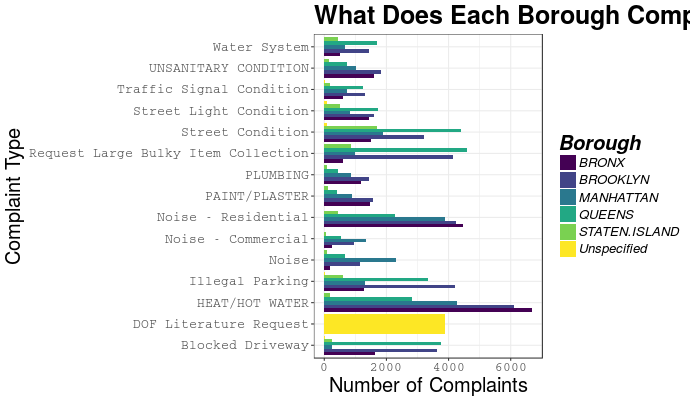

Given we're reviewing data from February, a pretty cold month, most complaints are about "Heat/Hot Water". Makes sense. Queens appears to be a bit of an outlier and does not have as many complaints about "Heat/Hot Water" as the other boroughs. Staten Island doesn't complain much period.
Either Staten Island and Queens are getting good "Heat/Hot Water" or people are not as vocal as the other three boroughs.